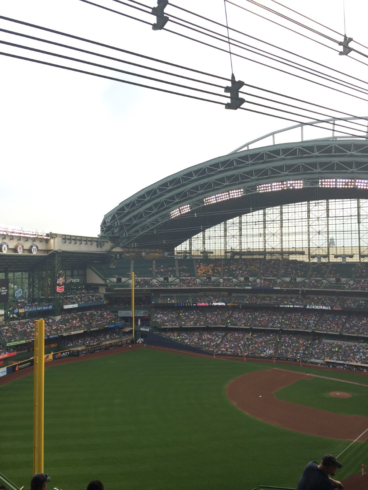
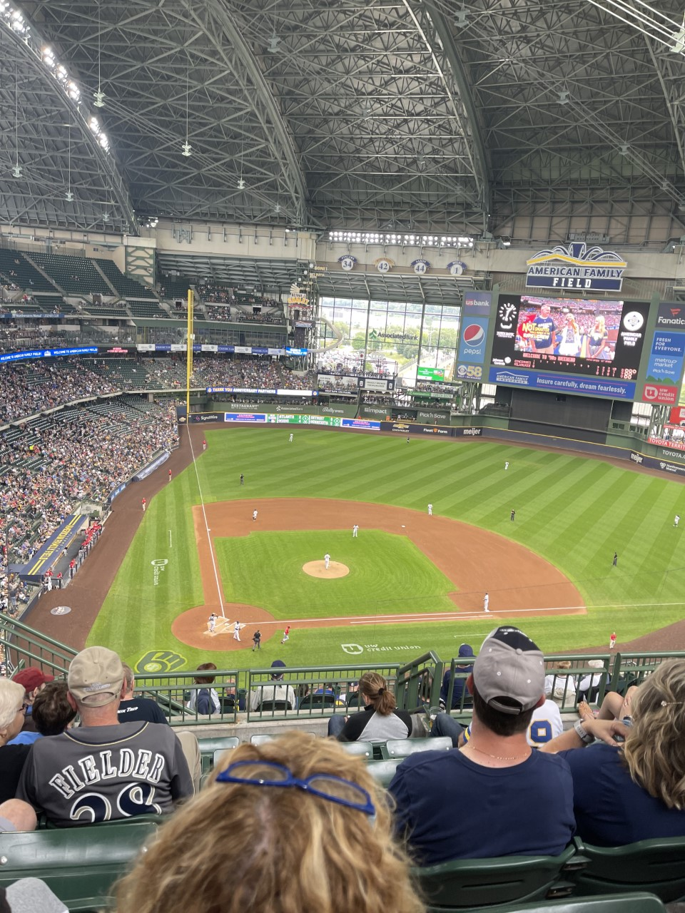

The Milwaukee Brewers were my favorite team growing up. In first grade I would be able to list off every single player on their roster. My dad and I would always watch highlights together, and he would show me vidoes of Prince Fielder, my favorite player. I still remember when my dad took me to my first game. Now the Brewers have stud players like Christian Yelich and Corbin Burnes. Unfortunately, the Brewers have never won a World Series. My dream is that I can see them win a championship, because then I would have been able to watch all of my favorite teams win one.
Before changing the name to American Family Field, the Brewers' stadium was called Miller Park. I don't like that they changed the name, as Miller Park is iconic to both the city and the team. I have never been to another MLB stadium, but Miller Park is definitely one of the coolest ones. Rain or shine, the Brewers are able to play because of the retractable roof. Below is a photo I took when it was still called Miller Park, and the dome is open.
While I don't like the name as much, the stadium has still stayed the same (besides the big "American Family Field" above the scoreboard). Below is a picture I took after they changed the name. Notice that here the dome is closed.
